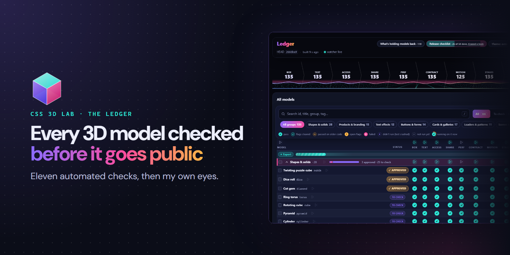

Six days · 694 commits
A green tick is a date, not a fact
The Ledger behind CSS 3D Lab: eleven automated checks each of its 135 models has to pass, because I couldn’t check the technical side by hand, and then my own visual review. Six days of Claude agents, and what I learned about the canvas on the way. Counted from git, the checks and the session logs.